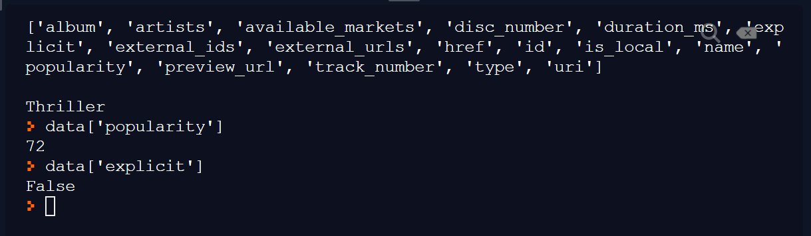

Getting data with requests
API endpoints
Our first port of call should be the documentation - take a look around the sections in the API Endpoint Reference.
You'll discover:
- the
base_urlfor the API ishttps://api.spotify.com/v1 -
various endpoints which accept
GETrequests, such as:https://api.spotify.com/v1/recommendations
https://api.spotify.com/v1/artists/{id}
Looking at the detailed page of each of these endpoints, you'll see a list of the query parameters that can (or are required) be provided, as well as the need for authorization details to be provided in the header.
Again, requests will simplify this process for us.
Using requests.get()
We previously covered how REST APIs typically support GET requests, which can be used to retrieve data from the API.
repl.it code snippet
Access Token
Fork the repl and copy your access_token into main.py (you'll need to create a new one if it's more than an hour old).
Code walkthrough
Let's go through main.py and see what happened...
Authorization headers
import requests
#replace this with your current client_credentials access_token:
access_token = 'BQDNokgFn6wBLEpB1NPe-dhG4g29OWnLCPrRZGZvZ-ZlRHGPsi51els1Thy5lARaGkHVikTu4D9gB9XUeus'
headers = {'Authorization': f'Bearer {access_token}'}
- we imported
requestsand assigned our token toaccess_token - we created a
headersdictionary, with thisparameter:valuepair:
Authorization: Bearer [access_token]
Notice that we had to do some work to get the value in the format the API requires (with Bearer before the access_token); this is mentioned in the API documentation but wasn't clear to me before Google came to the rescue.
URL components
base_url = 'https://api.spotify.com/v1'
endpoint = '/tracks/'
identifier = '7azo4rpSUh8nXgtonC6Pkq'
full_url = f'{base_url}{endpoint}{identifier}'
-
the URL is in component parts and combined using an f-string; this will allow us to make further requests to different endpoints more easily
-
the
identifiervalue is atrack_id; you can get these from the Spotify Web Player:- right-click on any song title
- click
SharethenCopy Song Link - the
track_idis the final part of the URL
Response data
response = requests.get(full_url, headers=headers)
data = response.json()
print(list(data.keys()), '\n\n', data['name'])
['album', 'artists', 'available_markets', 'disc_number', 'duration_ms', 'explicit', 'external_ids', 'external_urls', 'href', 'id', 'is_local', 'name', 'popularity', 'preview_url', 'track_number', 'type', 'uri']
Thriller
- we used the
.json()method on theResponseobject to convert the JSON data into equivalent Python data stuctures - we took a look at the
listof.keys()in the resulting dictionary - we fished out the value for the
namekey from the dictionary
JSON structure
We learned previously how JSON is made up of the following structures:
- JSON objects, which get converted to Python dictionaries
- JSON arrays, which get converted to Python lists
JSON datasets are often heavily nested; by this it's meant that we can expect to encounter instances of these data structures within others.
Example of JSON structure
data['artists']
[{'external_urls': {'spotify': 'https://open.spotify.com/artist/3fMbdgg4jU18AjLCKBhRSm'},
'href': 'https://api.spotify.com/v1/artists/3fMbdgg4jU18AjLCKBhRSm',
'id': '3fMbdgg4jU18AjLCKBhRSm',
'name': 'Michael Jackson',
'type': 'artist',
'uri': 'spotify:artist:3fMbdgg4jU18AjLCKBhRSm'}]
data['artists'][0]['name']
'Michael Jackson'
- the value associated with the
datakey is itself a list of dictionaries (in this case there is only one element in the list, but the structure means that several artists could be accomodated)
print(data['artists'][0]['external_urls']['spotify'])
https://open.spotify.com/artist/3fMbdgg4jU18AjLCKBhRSm
- to extract the Spotify URL we are getting a value from a dictionary, which is itself a value in another dictionary, which is itself an element in a list, which is itself a value in another dictionary. Phew!
The repl.it console
After running the repl you forked earlier, you can access the data dictionary via the console:

- after running
main.py, thedatadictionary (and anything else imported or created) is in memory - as a Python
repl, the Python interpreter is already running, and we can enter Python commands